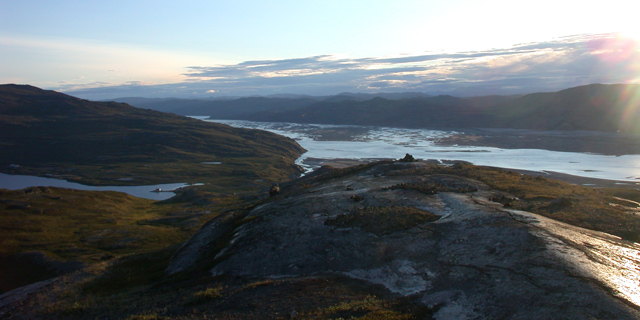

| |<< |< August 10, 2005 | |
|
So, the last day. Not much to tell, really. Upon waking up, Jim and I began to pack our personal gear (the robot having been packed and palletized the day before). We then had to break down our tents, and lent a hand in tent-striking to some folks that were also leaving that day. This was not actually as easy as it might sound - having been up for the last 3-4 months, the bottom edge of the tents and their flies had become encased in ice to the snow around, and the bamboo stakes had to be wrested from the packed snow as well. So, the tents literally had to be dug out, and th ice pulverized with a mallet or hammer, before one could even begin to start disassembling them. Kanger looked largely the same since we had arrived some 2-1/2 weeks ago. It was a bit warmer, before, but the sun was shining brightly, and all the hills about bathed in a warm glow of the low sun. After finding our rooms and enjoying our first shower since leaving the states, and a well-earned nap, we had dinner over at the airport (the only cafeteria-like place in the whole town). Afterwards, unable to resist the pull of the hills about me, and with nothing better to do, I decided to go for a hike. Since local sunset doesn't occur until about 11, I had plenty of time ahead of me. I won't regail you with tales of the hike - I don't really have the knack for it. Instead, I'll let this final picture here give you a sense of what I was able to see. --Alex Streeter |
|
|  | |
| the view westward from the hills overlooking Kangerlussuaq. In the center is the fjord that extends for nearly hundred miles to the sea. The lake to the left is the town's water source, Lake Ferguson. | |
| |<< |< August 10, 2005 |
| [Main] | [Mission] | [Design] | [Science] | [Papers] | [Pictures] | [Team] |
|
Last Updated on 10/20/2005 by Streeter
Site © Thayer School of Engineering, Dartmouth College, Hanover, N.H. |